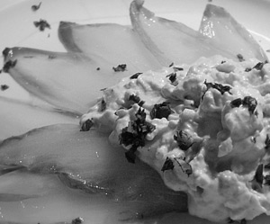

Chicoree & Avocado
5 von 6Eine Avocado schälen und mit einer Gabel zerkleinern. Ein Becher Crème fraiche, Salz, Pfeffer und etwas Zitronesaft dazu geben. Alles gut mischen, beiseite Stellen. Pro Person ein Chicoree der Länge nach in Streifen schneiden. In Olivenöl ca. 5 min dämpfen und mit etwas Zucker und Salz würzen. Auf einen Teller verteilen und mit dem Avocadomousse servieren.
